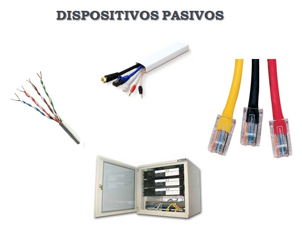
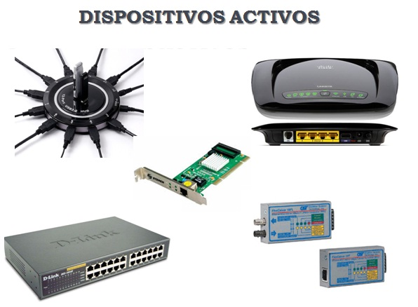

¿Qué son los componentes pasivos en la red?
Un componente pasivo, o dispositivo pasivo, es un componente electrónico que solo puede recibir energía, que puede disipar, absorber o almacenar en un campo eléctrico o magnético.
Son aquellos que no requieren energía eléctrica para funcionar y sirven para guiar, proteger o conectar señales de datos dentro de la red.
Componentes pasivos:
Listado de componentes

RJ45
Conector estándar para cables de red, usado en Ethernet.

Jacks o Keystone
Puntos de conexión modular para cables de red en paneles o cajas de pared.

Cable UTP (Unshielded Twisted Pair)
Tipo de cable usado en redes LAN, compuesto por pares de hilos trenzados.

Patch Panel
Panel de conexiones para organizar y gestionar múltiples cables de red.

Patch cord
Cables cortos con conectores RJ45 en ambos extremos, usados para conectar dispositivos a la red.

Fibra óptica
Cable que transmite datos como pulsos de luz, utilizado para largas distancias y alta velocidad.

Canaletas
Conductos que protegen y guían los cables de red dentro de un edificio.
¿Qué son los componentes activos en la red?
Son aquellos dispositivos o equipos que se encargan de distribuir en forma activa la información a través de la red, como concentradores, access point, switches, router, entre otros.
Son dispositivos que requieren energía eléctrica para funcionar y procesan señales en la red.